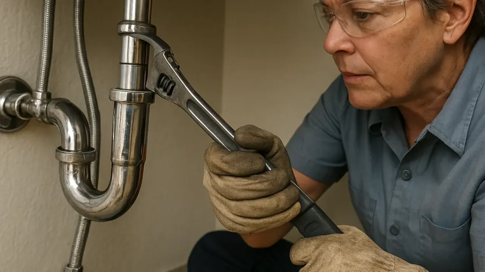

Yes, we offer 24/7 emergency plumbing services in California, to address urgent plumbing issues at any time. The first job on the call is helping you stop the damage before the technician arrives — the dispatcher talks you through the shut-off.
Your local Anaheim Plumber in California team
Anaheim, California Plumber for Homes & Businesses
Plumbing problems in Anaheim rarely arrive at a convenient time, so our local crew is set up to respond fast — day, night and weekends. Homes in Anaheim (Orange County) sit close enough to the sea for salt air to matter. Exposed pipes, outdoor taps and drain covers wear faster here than they do inland. Our route covers Anaheim ZIPs including 92808, 92806 and 92807 — if yours is not listed, call and we will confirm. From Disneyland Resort and Angel Stadium to the streets around Disneyland and Anaheim Hills, our technicians know the Anaheim area well enough to give useful directions, not just an arrival window. Call us for residential plumbing, commercial plumbing or drain cleaning — or any of the other services on this page. One number covers the lot. From Disneyland to Old Towne, the homes we work in across Anaheim range from older properties with ageing pipework to newer builds, and the work changes with the house — a repipe in one street, a water heater in the next, a drain cleared around the corner. Disneyland Resort is the reference point most people give us when describing where they are, and it works: our technicians know the Anaheim area well enough to give useful directions, not just an arrival window. The local building codes are the ones we work to on every job.
18+Years serving Anaheim
4.95-Star Rating
24/724/7 Service
Services available in Anaheim
Plumbing Services Available in Anaheim
Browse the services we run in Anaheim. Each card explains the work in plain terms — no jargon, and no hidden extras in the price.
 Emergency Plumbing ServicesWhen water is where it should not be in Anaheim, our emergency team is a phone call away, any hour of the day or night.See details →
Emergency Plumbing ServicesWhen water is where it should not be in Anaheim, our emergency team is a phone call away, any hour of the day or night.See details → Residential PlumbingFrom dripping taps to full bathroom pipework, residential plumbing for homes across Anaheim.See details →
Residential PlumbingFrom dripping taps to full bathroom pipework, residential plumbing for homes across Anaheim.See details → Commercial PlumbingPlumbing for shops, offices, restaurants and workplaces in Anaheim — scheduled around your trading hours, not ours.See details →
Commercial PlumbingPlumbing for shops, offices, restaurants and workplaces in Anaheim — scheduled around your trading hours, not ours.See details → Drain CleaningWe clear Anaheim drains and find the cause of the clog, not just the clog itself.See details →
Drain CleaningWe clear Anaheim drains and find the cause of the clog, not just the clog itself.See details → Sewer Line RepairCamera inspection and repair of sewer lines in Anaheim, with trenchless options where the line allows it.See details →
Sewer Line RepairCamera inspection and repair of sewer lines in Anaheim, with trenchless options where the line allows it.See details → Water Heater Repair & InstallationNo hot water in Anaheim? We repair and replace tank and tankless heaters, and tell you honestly which one the job needs.See details →
Water Heater Repair & InstallationNo hot water in Anaheim? We repair and replace tank and tankless heaters, and tell you honestly which one the job needs.See details → Leak Detection & RepairWe track down leaks in walls, floors and underground lines across Anaheim, then repair the failed section.See details →
Leak Detection & RepairWe track down leaks in walls, floors and underground lines across Anaheim, then repair the failed section.See details → Sump Pump & Pipe Leak RepairWe keep Anaheim sump systems working: pump service, float and switch replacement, and leak repair.See details →
Sump Pump & Pipe Leak RepairWe keep Anaheim sump systems working: pump service, float and switch replacement, and leak repair.See details → Toilet Repair & InstallationToilet trouble in Anaheim — running, leaking, rocking or blocked — fixed properly, or replaced with a model that saves water.See details →
Toilet Repair & InstallationToilet trouble in Anaheim — running, leaking, rocking or blocked — fixed properly, or replaced with a model that saves water.See details → Kitchen plumbingKitchen plumbing in Anaheim — sinks, taps, dishwashers and disposals, fitted properly and left watertight.See details →
Kitchen plumbingKitchen plumbing in Anaheim — sinks, taps, dishwashers and disposals, fitted properly and left watertight.See details →
Questions about emergency call-outs in Anaheim
Across Anaheim
Plumbing across Anaheim: the neighbourhoods we cover
Our Anaheim route covers the whole city, from Disneyland to Old Towne. The notes below describe the work we do in each area — the housing, the pipework and the faults that come up most often — written from the California coast conditions that shape plumbing here.
01
Disneyland
If you live around Disneyland and the water bill has crept up with no change in use, that is worth a call. A slow leak — a running toilet, a weeping joint, a slab leak — can run for weeks before it shows, and the meter is usually the first to know. We check the meter first on every visit, before opening anything up.
02
Anaheim Hills
Water heaters work hard around Anaheim Hills, and with moderately hard water in Anaheim the scale inside the tank is what shortens their life. A heater that is flushed once a year and fitted with a sound anode rod will usually reach its full expected life; one that is never flushed will run louder, heat slower and fail years early.
03
GardenWalk
If the drains around GardenWalk run slow, roots are one of the first things we check. Mature trees and older clay or cast-iron laterals are a common combination across the California coast, and a camera inspection shows in one visit whether the line is sound, root-damaged or bellied — and whether a cut, a lining or a replacement is the honest fix.
04
Old Towne
Older homes around Old Towne are the ones most likely to need a proper look at the pipework. Galvanised supply lines narrow with rust over decades, cast-iron drains scale and sag, and the first signs — falling pressure, rust-coloured water after a holiday away, a drain that slows every winter — are easy to miss until they are not.
Who we serve in Anaheim
Homes and businesses need different plumbing. We do both.
Residential Plumbing Services
Most of our home visits in Anaheim start with something small — a drip, a smell, a toilet that will not stop running — and the job is to fix it properly, explain what caused it, and leave the house tidy. Prices are agreed in writing before work starts.
Emergency plumbing repairs
Urgent faults get priority slots, so a burst pipe or backup costs your business hours, not days.
Routine maintenance
Scheduled checks catch worn parts and slow leaks before they shut a restroom or a kitchen down.
Water heater installation
New water heaters fitted and tested, sized for the household and installed with proper venting and safety checks.
Drain cleaning services
We clear slow and blocked drains, flush the line, and check for the buildup that caused the problem.
- Round-the-clock emergency cover when a home fault cannot wait.
- Straightforward guidance on keeping the home's plumbing in good order.
- Clear written prices before work begins, with no hidden extras.
Commercial Plumbing Services
Businesses need plumbing partners, not one-off call-outs. We offer scheduled maintenance and rapid response for commercial clients, so faults get caught before they interrupt trading.
- Restaurants
- Retail stores
- Office buildings
- Medical facilities
- Hotels
Minimized downtime
The aim is simple: fix it fast and keep the disruption to a minimum while the work happens.
Compliance with regulations
We stay current with local regulations, so the job passes inspection the first time.
Customized solutions
Service plans built around the property — its size, its hours, and the equipment it depends on.
Regular maintenance plans
Routine maintenance keeps systems compliant and working, with visits booked around your calendar.
What your home’s age means
What Anaheim’s homes mean for your plumbing
Two houses on the same street in Anaheim can have completely different plumbing, because the year they were built decides what is in the walls. Knowing what era a home belongs to tells you what to check, what is likely to fail first, and whether a repair or a replacement is the honest answer.
Built before 1960: galvanised steel and cast iron
Homes built before about 1960 usually have galvanised steel supply pipes and cast-iron drains. Galvanised steel rusts from the inside, so the bore narrows over decades: pressure falls, water runs brown after a holiday away, and eventually a pinhole leak appears. Cast-iron drains scale and sag in the same way. A home of this age in Anaheim is worth a proper look at the pipework, even if nothing has failed yet — the first signs are easy to miss.
1960s to 1980s: copper supply, plastic drains
Copper and plastic define the 1960s to 1980s: copper supply lines, ABS or PVC drains. It was a good era for plumbing, and most of it is still sound — but copper can develop pinhole leaks where the water chemistry is aggressive, and the drains are now old enough for joints and fittings to fail. The checks here are targeted: pressure, visible joints, and the drains that serve the busiest bathrooms.
1990s to today: PEX and CPVC
PEX and CPVC define homes built from the 1990s onward: flexible pipe that resists freezing and scale, and installs quickly. The weak points moved, they did not vanish — fittings, manifolds and the quality of the installation now decide whether the system is trouble-free. Exposed runs still need protection from sun, and a bad manifold will show up as pressure problems in one part of the house and not another.
Near the coast, the outside of the house deserves as much attention as the inside: salt air corrodes fittings and vents, damp air keeps crawl spaces moist, and winter storms test every gutter and drain. Whatever the age of the home, a yearly look over the outdoor pipework is the habit that prevents the expensive call-outs.
Service by service in Anaheim
Every service we run in Anaheim.
Each service below is a full breakdown of how the work is scoped, priced and carried out in this city — not a generic description.
Emergency Plumbing ServicesResidential PlumbingCommercial PlumbingDrain CleaningSewer Line RepairWater Heater Repair & InstallationLeak Detection & RepairSump Pump & Pipe Leak RepairToilet Repair & InstallationKitchen plumbing
01
Emergency Plumbing Services
Emergency Plumbing Services
When you need an emergency plumber in Anaheim, our team is ready to assist. We understand that plumbing issues can arise at any time, disrupting your daily life. Our expert plumbers are available 24/7 to handle any urgent plumbing situation, ensuring your home or business remains functional and safe.
24/7 Availability for Emergencies
Our 24/7 plumber in California is always on call. Whether it's a burst pipe or a severe leak, we respond quickly to minimize damage and restore your plumbing. You can count on us for immediate assistance. In Anaheim that means a real person on the phone at 2am, not a voicemail, and a technician who arrives with the parts to make the situation safe on the first visit.
Quick Response Times in Anaheim
Living here means dealing with unique plumbing challenges. Our emergency plumbing services are designed to address local issues swiftly, ensuring you receive the best care when you need it most. The California coast conditions around Anaheim shape what goes wrong — salt air and damp sea air — so the emergency kit on the van is stocked for the faults this area actually produces.
Expertise in Local Plumbing Issues
We specialize in plumbing repairs in Anaheim, understanding the common problems faced by residents. From clogged drains to malfunctioning water heaters, our skilled team is equipped to handle it all.
- Rapid response to plumbing emergencies 24/7
- Clear advice on stopping the damage before we arrive
- Written price agreed before work starts
- Follow-up check that the repair is holding
02
Residential Plumbing
Residential Plumbing
Most of our work in Anaheim is residential, and most of it is unglamorous: the tap that drips at night, the shower that runs cold, the drain that smells, the toilet that will not stop running. We treat those jobs with the same care as a full bathroom refit — find the fault, agree the price in writing, fix it properly, and leave the place tidy.
Comprehensive Plumbing Solutions
We offer a wide range of plumbing services, from installations to repairs. Our team is dedicated to providing affordable plumbing services that meet your specific needs and budget. Homes in Anaheim range from older properties with ageing pipework to newer builds, so the work ranges too — and the price is agreed before we start, either way.
Expert Installations and Repairs
Our experienced plumbers handle everything from fixture installations to complex plumbing repairs in Anaheim. We ensure that all work is performed to the highest standards, giving you peace of mind. Because salt air and damp sea air affect homes in Anaheim, we check the parts that wear first in this area as a matter of routine, not as an extra.
Preventative Maintenance Plans
To keep your plumbing system in top shape, we offer preventative maintenance plans. Regular check-ups can help identify issues early, saving you time and money on future repairs.
- Professional installations of fixtures and appliances
- Thorough plumbing inspections for your home
- Timely repairs to minimize disruptions
- Clear written prices before work begins
03
Commercial Plumbing
Commercial Plumbing
As a leading commercial plumbing company, we understand the unique needs of businesses in the area. Our team of experts provides tailored plumbing solutions to ensure your operations run smoothly and efficiently.
Tailored Solutions for Businesses
We specialize in commercial plumbing services, catering to various industries. Our team works closely with business owners to develop effective plumbing solutions that fit their specific requirements. For workplaces in Anaheim, the first visit includes a look at the whole system — restrooms, kitchen, mains — so the maintenance plan covers the property, not just the fault in front of us.
Minimizing Downtime for Your Business
We know that plumbing issues can disrupt your business operations. Our goal is to provide fast and efficient service, ensuring minimal downtime and a quick return to normalcy for your commercial space. The dispatcher in Anaheim keeps a record of the property's system, so repeat visits are faster — the technician arrives knowing the layout, the materials and the history.
Compliance with Local Regulations
Our plumbers are well-versed in local plumbing codes and regulations in Anaheim. We ensure that all work is compliant, giving you peace of mind and protecting your business from potential fines.
- Comprehensive plumbing assessments for businesses
- Rapid response to commercial plumbing emergencies
- Expert installation of commercial fixtures
- Regular maintenance plans to prevent issues
04
Drain Cleaning
Drain Cleaning
Our drain cleaning services are designed to keep your plumbing system flowing smoothly. We provide effective solutions to prevent clogs and ensure your drains function efficiently.
Thorough Drain Cleaning Techniques
Using advanced techniques, our team specializes in drain cleaning in Anaheim. We tackle stubborn clogs and buildup, ensuring your drains are clear and free-flowing. In Anaheim the first question on a slow drain is always the same: is it local, or is it further down the line? A local blockage clears in minutes; a line problem needs a camera, and the two should not be confused.
Preventative Drain Maintenance
Regular drain cleaning is essential for preventing future issues. Our affordable plumbing company offers maintenance plans to keep your drains in optimal condition. A drain that was cleared last year and is slow again in Anaheim is usually telling you the cause was never found, and a camera inspection is the next step, not another clear.
Identifying Underlying Issues
Sometimes, clogged drains indicate larger problems. Our experts are trained to identify underlying plumbing issues, providing comprehensive solutions to protect your home.
- High-quality drain cleaning services for homes
- Advanced equipment for effective cleaning
- Camera inspection to find the real cause
- Expert advice on drain care and maintenance
05
Sewer Line Repair
Sewer Line Repair
Sewer work starts with a camera, not a shovel. In Anaheim the usual culprits are roots in older clay or cast-iron laterals, joints opened by moving ground, and bellies where the pipe has sagged — and each one has a different fix. Trenchless repair is possible where the line allows it, which keeps the garden and driveway intact; where it does not, we dig neatly and put it back properly.
Comprehensive Sewer Inspections
Our experts conduct thorough sewer inspections to identify issues. We utilize advanced technology to pinpoint problems, providing effective sewer line repair solutions in Anaheim. Sewer laterals in Anaheim fail most often at the joints, where roots get in or the ground has moved — and a camera shows the fault before any digging starts.
Timely Repairs to Prevent Damage
Ignoring sewer line issues can lead to significant damage. Our team is dedicated to providing prompt sewer line repairs in Anaheim, preventing further complications and costly repairs. The California coast ground around Anaheim — sandy, free-draining soils near the shore — is what opens joints and bellies pipes, so we check for movement as well as blockage.
Expertise in Local Sewer Systems
As a trusted California plumbing company near me in Anaheim, we have extensive knowledge of local sewer systems. Our team ensures all repairs comply with local regulations.
- Thorough inspections to identify sewer issues
- Fast and effective sewer line repairs
- Trenchless options where the line allows it
- Compliance with local plumbing regulations
06
Water Heater Repair & Installation
Water Heater Repair & Installation
Our water heater repair & installation services ensure you have reliable hot water when you need it. we provide expert solutions tailored to your specific needs.
Expert Water Heater Installations
We specialize in water heater installations in Anaheim, offering a variety of options to suit your home. Our team ensures proper installation for optimal performance and efficiency. In Anaheim the first question on a dead heater is whether it is the thermostat, the element or the tank itself — three different faults, three different prices, and the diagnosis takes minutes with the right meter.
Reliable Repair Services
If your water heater is malfunctioning, our skilled plumbers provide prompt water heater repair in Anaheim. We diagnose issues quickly and offer effective solutions to restore hot water. A new heater in Anaheim is sized for the household, not the catalogue: too small and the showers run cold, too large and the running costs climb for no reason.
Maintenance for Longevity
Regular maintenance is key to extending the life of your water heater. Our affordable plumbing services include maintenance plans to keep your system running smoothly.
- Professional installation of various water heaters
- Timely repairs for all types of water heaters
- Maintenance plans to extend water heater life
- Honest advice on repair versus replacement
07
Leak Detection & Repair in Anaheim
Leak Detection & Repair in Anaheim
Hidden leaks are the leaks that cost the most, because they run for weeks before anyone notices — a stain on the ceiling, a warm patch on the floor, a water bill that climbs for no reason. In Anaheim we locate them with acoustic listening and electronic detection, so we open up one small area instead of hunting through walls. The repair is the easy part; finding the leak without wrecking the house is the skill.
Advanced Leak Detection Technology
Using state-of-the-art equipment, our experts provide leak detection in Anaheim. We identify hidden leaks that could cause significant damage if left unchecked. Hidden leaks in Anaheim usually announce themselves indirectly — a stain, a warm patch on the floor, a bill that climbs — and finding them without wrecking the house is the skill.
Prompt Repairs to Prevent Damage
Once a leak is detected, our team offers quick and reliable leak repair services. We ensure that your plumbing system is restored to optimal condition. Homes in Anaheim with older pipework are more likely to spring pinhole leaks, so a detection visit here includes a check of the surrounding runs, not just the one that failed.
Preventative Measures for Homeowners
To avoid future leaks, we provide preventative maintenance tips. Our affordable plumbing company is here to help you protect your home from plumbing issues.
- Thorough leak detection using advanced tools
- Fast and effective leak repairs
- Minimal disruption — we open one area, not the wall
- Preventative maintenance recommendations
08
Sump Pump & Pipe Leak Repair in Anaheim
Sump Pump & Pipe Leak Repair in Anaheim
Our sump pump & pipe leak repair services are crucial for protecting your home from water damage. We provide expert solutions to ensure your plumbing system functions effectively, giving you peace of mind.
Expert Sump Pump Installations
We specialize in sump pump installation in Anaheim, ensuring your home is protected from flooding. Our team recommends the best sump pump options for your specific needs. In Anaheim the pump is tested the way it will be used: water poured into the pit, the float watched, the discharge checked — a test you can watch, not a switch flicked on and off.
Reliable Pipe Leak Repairs
If you have a pipe leak, our skilled plumbers provide prompt repair services. We understand the urgency of pipe leaks and work quickly to minimize damage. The discharge line matters as much as the pump in Anaheim: a blocked or frozen discharge will flood the house just as surely as a dead pump, so it is checked on every visit.
Maintenance to Prevent Future Issues
Regular maintenance of your sump pump is essential. Our affordable plumbing services include routine checks to ensure your system is functioning properly.
- Professional installation of sump pumps
- Timely repairs for pipe leaks
- Routine maintenance to prevent flooding
- Full test of the system before sign-off
09
Toilet Repair & Installation in Anaheim
Toilet Repair & Installation in Anaheim
Our toilet repair & installation services are designed to keep your bathroom functioning smoothly. we offer reliable solutions for all your toilet needs.
Expert Toilet Installations
We provide professional toilet installation in Anaheim, ensuring your new toilet functions perfectly. Our team helps you choose the right model for your home. Toilet repairs in Anaheim start with the cistern, not the bowl — most running toilets are a worn flapper or a mis-set fill valve, both cheap fixes.
Prompt Toilet Repairs
If your toilet is malfunctioning, our skilled plumbers offer quick repair services. We diagnose issues efficiently, restoring your toilet's functionality in no time. A replacement toilet in Anaheim is fitted with a new wax ring and a new supply line as standard, and the floor underneath is checked before the new unit goes in.
Maintenance Tips for Longevity
To keep your toilet in top condition, we provide maintenance tips and services. Our affordable plumbing company is here to help you maintain your plumbing.
- Professional installation of various toilet models
- Timely repairs for toilet malfunctions
- Water-saving models fitted and explained
- Expert advice on toilet selection
10
Kitchen plumbing in Anaheim
Kitchen Plumbing in Anaheim
Our kitchen plumbing services are essential for maintaining a functional and efficient kitchen. we offer expert solutions tailored to your kitchen needs.
Comprehensive Kitchen Installations
We specialize in kitchen plumbing installations in Anaheim, from sinks to dishwashers. Our team ensures that all components are installed correctly for optimal performance. Kitchen drains in Anaheim block mostly on grease, so a repair here always includes advice on keeping it out of the line — the fix that stops the next blockage.
Efficient Repairs for Kitchen Fixtures
If you experience issues with your kitchen plumbing, our skilled plumbers provide prompt repairs. We address leaks, clogs, and other problems quickly and effectively. Grease is the usual cause of slow kitchen drains in Anaheim, so a repair here includes advice on keeping it out of the line in future.
Preventative Maintenance for Kitchens
Regular maintenance is key to a well-functioning kitchen. Our affordable plumbing services include inspections and maintenance to prevent future plumbing issues.
- Professional installation of kitchen fixtures
- Timely repairs for kitchen plumbing issues
- Dishwasher and disposal hookups done properly
- Routine maintenance to prevent clogs
More than a service list
How We Execute Plumbing Services
Local codes and building types shape how work is done in Anaheim. Our technicians know both, so the job passes inspection the first time.
High demand during tourist season
The influx of tourists can strain local plumbing systems, leading to increased emergency calls for repairs. Homes in Anaheim see this more often than the state average, because salt air and damp sea air work on the system year-round.
How we help: We ramp up our staffing during peak tourist seasons to ensure timely responses to plumbing emergencies.
Aging infrastructure in older neighborhoods
Older neighborhoods may have outdated plumbing systems that require frequent repairs and upgrades. In Anaheim this shows up regularly, so it is one of the first things our technicians check on a visit.
How we help: Our team specializes in retrofitting and upgrading plumbing systems to meet modern standards.
Seasonal heavy rains
Heavy rains can lead to flooding and sewer backups, creating urgent plumbing needs. This is the kind of fault that starts small in Anaheim and becomes expensive if it is ignored for a season.
How we help: We offer proactive inspections and maintenance to prevent flooding and ensure proper drainage.
Salt air corrosion on outdoor fittings
Exposed metal near the coast rusts faster than the same parts inland, and a corroded hose bib or vent collar fails without warning.
How we help: We fit brass or stainless fittings outside and check exposed runs once a year, so corrosion is caught while it is still surface rust.
Reviews from Anaheim customers
Customer Reviews from Anaheim
4.9★★★★★verified reviews
★★★★★
“Pro Plumbing California was quick to respond when I had a pipe burst in my home. They arrived within 30 minutes and fixed the issue efficiently. Highly recommend!”
SL
Sarah L.Anaheim Hills
Verified★★★★★
“I had a great experience with their drain cleaning service. They were professional and explained everything clearly. My drains are working perfectly now!”
MT
Mark T.Disneyland
Verified★★★★★
“Their team installed a new water heater for me on short notice. They were knowledgeable and did a fantastic job. Thank you for the excellent service!”
ER
Emily R.Old Towne
Verified
How a typical visit works
How We Handle Common Plumbing Jobs
Every job starts with a look at the problem and a clear price before work begins. Here is what a typical visit looks like for three of the most common jobs.
The problem — Drain clearing
A kitchen sink that will not drain, or a shower standing in water
What we did — Drain clearing
The blockage is cleared with a snake or auger, the line is flushed and flow-tested, and the drain is checked for whatever caused the clog.
The result — Drain clearing
Water runs away freely again, and anything else the technician spotted is written down for you.
The problem — Water heater
No hot water at all, or the heater making a rumbling noise when it fires
What we did — Water heater
Our technician looks the heater over, quotes repair against replacement honestly, installs the chosen option, and checks hot water at the taps before packing up.
The result — Water heater
The household has hot water again, the installation is checked for leaks, and the space is tidied before we go.
The problem — Kitchen sink and dishwasher
A leaking trap, a dishwasher that backs up, or a disposal that has given up
What we did — Kitchen sink and dishwasher
The trap and waste are refitted, the dishwasher drain loop is corrected, and the disposal is repaired or replaced — then everything is tested under full flow.
The result — Kitchen sink and dishwasher
The sink drains freely, the dishwasher runs a full cycle without backing up, and the cupboard underneath stays dry.
Early warning signs
Have us take a look →
Signs You Need a Plumber in Anaheim
01
Unpleasant odors from drains
02
Persistent water stains on walls
03
Rust-coloured or cloudy tap water
04
A warm patch on the floor, or damp at the base of a wall
05
Running toilets
Anaheim problem patterns
Common Plumbing Problems in Anaheim
The same faults come up again and again on Anaheim call-outs. They follow from the age and build of the homes here, not from bad luck — and most of them cost far less fixed early than after they fail.
01
Clogged drains due to tree roots
Why it happens: Anaheim's lush landscaping often leads to tree roots invading sewer lines, causing blockages.
Our approach: We use advanced drain cleaning techniques to remove roots and restore proper flow without damaging the pipes.
02
Leaky faucets
Why it happens: Older plumbing fixtures in many homes can develop leaks over time, leading to wasted water and increased bills.
Our approach: Our team specializes in faucet repairs and replacements, ensuring efficient water use and minimizing waste.
03
Water heater failures
Why it happens: High demand for hot water, especially in winter, can strain water heaters, leading to failures.
Our approach: We provide regular maintenance and prompt repairs to extend the life of your water heater and ensure reliable performance.
04
Sewer line backups
Why it happens: Heavy rains can overwhelm sewer systems, causing backups in residential properties.
Our approach: We offer proactive sewer inspections and maintenance to prevent backups and ensure proper drainage.
In depth
Common plumbing problems in Anaheim, in depth
The four problems above are the ones we see most often in Anaheim. Below is what prevents each of them, plus two more faults that the California coast conditions around Anaheim produce regularly, covered in full.
01
Preventing clogged drains due to tree roots
How to prevent it: If trees stand near the line, have it camera-checked every year or two and the roots cleared before they mat into a full blockage — a drain that slows a little more each month is the warning.
02
Preventing leaky faucets
How to prevent it: Check the places leaks start — under sinks, behind toilets, around the water heater — once a year, and fix a weeping joint before it becomes a stain on the ceiling below.
03
Preventing water heater failures
How to prevent it: If the heater is over ten years old and has never been flushed, book the flush and the anode check together — it is the cheapest way to find out how much life is left.
04
Preventing sewer line backups
How to prevent it: Have the sewer line camera-inspected every couple of years — roots, cracks and sagging sections show up long before they back up — and keep wipes and grease out of the drains.
05
Seized shut-off valves
Why it happens: Stopcocks and shut-off valves seize from disuse and corrosion, and the failure only shows up in an emergency, when the water cannot be turned off.
How we fix it: We free the valve where possible and replace it with a lever valve where it has seized solid, so the water can be shut off in seconds.
How to prevent it: Work every shut-off valve in the house twice a year — kitchen, bathroom, water heater, and the main. A valve that moves freely is the cheapest insurance in plumbing.
06
Noisy pipes and water hammer
Why it happens: A bang when a tap shuts, or a rattle when the washing machine fills, usually means loose clips, high pressure, or air in the lines — and it gets worse, not better, if it is ignored.
How we fix it: We secure the loose runs, check the pressure, and fit a water hammer arrestor where the bang is worst. The fix is usually small; the damage from ignoring it is not.
How to prevent it: Note when the noise started and which tap causes it — that history tells the technician where to look, and whether pressure or a loose clip is the cause.
Questions about common problems in Anaheim
Usually it is the pipes, not the supply. Old galvanised lines narrow with rust from the inside, so showers run weak and taps slow to a trickle while the pipe looks fine from outside. We test pressure at several points to separate a supply problem from a pipework problem, then descale or replace the affected run. If the water runs brown after a holiday away, rust is already building.
Clear starting points
Plumbing Pricing in Anaheim
In Anaheim a straightforward repair in 2026 generally costs between $180 and $450. The exact figure depends on the fault, the parts and the timing — and it is agreed in writing before the work starts, so there are no surprises.
Same-day visits are available for urgent problems in Anaheim, and the emergency line runs through the night. Call, describe what is happening, and the dispatcher will confirm a visit.
01Service type
Different services such as leak detection or sewer line repair have varying costs based on the tools and expertise required.
02Material costs
The quality of materials, like PEX tubing or copper fittings, can affect the overall price of plumbing repairs and installations.
03Emergency response
Emergency services typically come with a premium, reflecting the urgency and immediate availability of our plumbing team.
Questions about plumbing prices in Anaheim
Typical plumbing costs in Anaheim range from $180 to $450, depending on the service type and complexity involved. Bigger jobs such as a sewer repair or a full repipe are quoted separately, in writing, before any work starts.
Anaheim through the year
Seasonal Plumbing Considerations in Anaheim
Through the year in Anaheim, the weather does most of the damage to plumbing. These are the seasonal patterns to plan around.
Spring
Spring is the season to undo winter’s wear: clear the gutters, check the drains, and look over any pipework that spent the winter cold and damp.
Tip: Schedule a plumbing inspection to ensure your drainage systems are clear and functioning properly.
Summer
Summer is the season for outdoor plumbing: hoses, irrigation and the lines that sit in the sun all get used hard, and heat expands every joint in the system.
Tip: Check outdoor taps and hose connections in early summer, and watch the water bill — a rise with no change in use usually means a leak somewhere.
Fall
Autumn is preparation season: gutters cleared before the rain, exposed pipes lagged before the cold, and the water heater flushed before it has to work hardest.
Tip: Book a maintenance check in the autumn — it is the cheapest visit of the year, and it prevents the expensive ones.
Winter
Winter is when small problems become emergencies: a cold snap freezes an exposed pipe, a scaled heater gives up under the extra load, and a blocked drain backs up in the first storm.
Tip: Before the cold arrives, insulate exposed pipes, clear the gutters, and have the water heater checked — the three jobs that prevent most winter call-outs.
Local plumbing notes
Local Notes for the Area
Before booking, it helps to know what the local area does to plumbing. The notes below cover the conditions around Anaheim, not the business itself.
- This area is in Orange County.
- Salt air can speed up corrosion on exposed pipes, fittings and outdoor fixtures, so it is worth checking them for rust and wear.
- Damp sea air and occasional heavy rain can keep crawl spaces and outdoor plumbing damp; keep drainage and gutters clear around the home.
- Older homes near the coast often have ageing supply lines; a periodic check for small leaks helps catch problems early.
- Salt-laden air attacks unprotected metal, so pipe clips, brackets and outdoor fixtures deserve a look at least once a year.
- Low-lying streets near the shore can see standing water after heavy rain; make sure surface drains run away from the house, not towards it.
Wherever you are in California, the basics are the same — find the main water shut-off before you need it, consider a seismic shut-off valve, and do not let small leaks run.
Water and weather in Anaheim
Water and weather in Anaheim: what it does to plumbing
Plumbing fails for local reasons. In Anaheim the local reasons are salt air and damp sea air, plus mild, damp winters and long dry summers — and understanding them is the difference between a repair that lasts and one that comes back next season.
The first thing salt air attacks is not the pipe — it is the fitting. Threads seize, washers perish, clips rust through, and the failure usually arrives as a tap that will not turn or a joint that weeps. The defence is boring and cheap: brass or stainless outside, coated fixings, and a look over the exposed runs once a year, ideally during another visit.
Damp is the second coastal factor. Sea air keeps crawl spaces and the shaded side of a house moist for much of the year, and winter storms can dump a lot of rain in a short burst. That combination is hard on drains and gutters: a blocked gutter sends water down the wall and into the foundations, and a slow drain turns into a backup when the storm drain outside is already full. Clearing gutters before the rainy season and keeping surface drains running away from the house prevents most of it.
Damp is the coastal factor nobody sees. Sea air keeps crawl spaces and the shaded side of a house moist for months, and moist air corrodes pipework, rots timber and grows mould where air does not move. Ventilating the crawl space, lagging cold-water lines so they do not sweat, and looking under the house once a year will keep the damp from becoming damage.
Local problem patterns
Plumbing problems common on the California coast
Salt air, sand and damp are the three forces that wear out coastal plumbing. In Anaheim, they show up as these five faults more than any others.
- Low water pressure from corroded lines — internal rust narrows old galvanised pipes until showers run weak and taps slow to a trickle.
- Gutters and downspouts working overtime — sea storms dump a lot of water fast, and a blocked gutter sends it straight down the wall and into the foundations.
- Outdoor showers and pool equipment — coastal homes often have outdoor showers and pool plumbing, and their exposed fittings corrode faster than indoor ones.
- Irrigation and garden lines — watering systems run all year near the coast, and a cracked line or backflow fault can waste water for weeks before anyone notices.
- Corroded outdoor taps and fittings — salt air eats unprotected metal, so exterior pipework, hose bibs and clips rust faster than the same parts inland.
Check the outdoor pipework once a year and clear the drains after storms — that alone prevents most coastal plumbing emergencies.
We know the route
Landmarks and Points of Interest in Anaheim
When you describe where you are in Anaheim, these landmarks help. They are well-known spots, not our premises — useful for directions only.
Disneyland Resort
Disneyland Resort is a well-known reference point in the area. Mentioning it when giving directions can help a visitor find the way to a home — it is not a service location or office.
Angel Stadium
Most people in Anaheim know Angel Stadium, so it works well as a landmark when you are describing where you are. It is a reference point for directions only — not our premises or a service location.
Anaheim Convention Center
Anaheim Convention Center is a well-known reference point in the area. Mentioning it when giving directions can help a visitor find the way to a home — it is not a service location or office.
Primary Anaheim response zone
Anaheim service coverage
Is your ZIP on the route?
The ZIP codes below are the ones our Anaheim route covers most often. If yours is not on the list, call anyway — nearby areas usually qualify, and the dispatcher will confirm.
928089280692807928049280592802928019280392809928129281592816
Popular neighborhoods
Check my address →
Disneyland · Anaheim Hills · GardenWalk · Old Towne
Questions about coverage and ZIP codes in Anaheim
Yes. Our Anaheim route covers 92808, 92806 and 92807, including Disneyland and Anaheim Hills. If your ZIP is not listed, call and the dispatcher will confirm — nearby areas usually qualify.
Anaheim plumbing FAQ
FAQs for Our Plumbing Services
The most-asked questions about our Anaheim service, answered plainly. If your question is not here, ask the dispatcher.
Call +1 (619) 612-9370 →To find the best plumber in Anaheim, check online reviews, ask for referrals, and ensure they are licensed and insured. A good plumber gives a written price before starting, explains the fault in plain terms, and knows the California coast conditions around Anaheim — salt air and damp sea air are what wear local plumbing out.
Plumbing repairs in Anaheim typically take between one to four hours, depending on the complexity of the issue. A water heater replacement or a sewer repair takes longer, and the dispatcher will tell you before the visit.
Before a plumber arrives, clear the work area, ensure easy access to plumbing fixtures, and note any specific issues you've observed. If you can, find the main shut-off valve before we arrive, and note when the problem started — that history helps the technician find the cause faster.
Yes. Hidden leaks are one of our most common jobs in Anaheim. We use acoustic listening and electronic detection to find the leak before opening anything up, then repair the failed section and check the surrounding pipework. Signs to watch for are water stains, a musty smell, a warm patch on the floor, or a water bill that rises with no change in use.
Outside Anaheim?
Nearby Cities We Serve
01Los AngelesLos Angeles is about 25 miles northwest of Anaheim, and we frequently serve clients traveling between these cities.↗02San DiegoSan Diego is approximately 86 miles southeast of Anaheim, and we often assist clients in this region with plumbing needs.↗03San JoseSan Jose is about 330 miles northwest, but we have clients who travel to Anaheim for business and require plumbing services.↗04San FranciscoSan Francisco is about 370 miles northwest of Anaheim, yet we cater to clients visiting Anaheim for events and attractions.↗
Credentials on file
Trust and Compliance in Anaheim
Licenses
- California State Plumbing License
- Available on request
Certifications
- EPA Certified
- Environmental Protection Agency
Insurance
- State Farm
- $2M general liability
Local affiliations- Anaheim Chamber of CommerceMember
- National Association of Plumbing ContractorsSponsor

Anaheim dispatch is ready
Need a Reliable Plumber in Anaheim?
Tell us what is wrong and get a free, written estimate. The dispatcher confirms the visit, and the work only starts once you have agreed the price.
Request Anaheim service
Send the details. We'll handle the next step.
Send the details of what is happening and where you are in Anaheim, and we will call to confirm the right appointment and timing.
Anaheim service hubAnaheim, California+1 (619) 612-9370Open 24 hours · 7 days a week